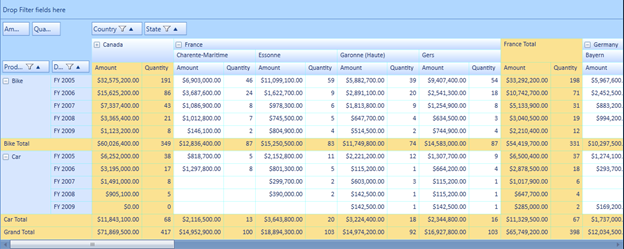
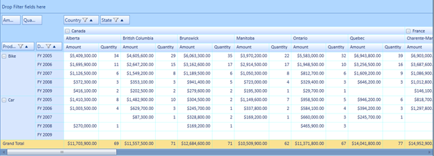

The subtotal hiding feature is used to show or hide the subtotals in the PivotGrid. In the case of larger data table, this feature enables the user to have an abstract view of the data by hiding subtotals using the ShowSubTotals property.
Use Case Scenarios
When the user has more computational fields with subtotals in each group of their PivotGrid, the user might find it difficult to view all the data. In that case, the user can hide the subtotals and make it visible when required.
The following screen shots shows the PivotGrid with shown and hidden sub totals.

Figure 13: PivotGrid with Subtotals

Figure 14: PivotGrid with Subtotals Hidden
Properties
Table 9: Property Table
|
Property |
Description |
Data Type |
Reference links |
|
ShowSubTotals |
Shows or hides the sub totals |
Boolean |
- |
Methods
Table 10: Method Table
|
Method |
Description |
Parameters |
Return Type |
Reference links |
|
SubTotalsRendering |
Handles rendering of cells(showing or hiding the cells) by calculating the cell range values in the Pivot Engine based on the ShowSubTotals property value in the control |
- |
Void |
- |
Sample Link
Follow the steps given below to view a sample of this feature:
1. Select Start > Programs > Syncfusion > Essential Studio x.x.x.x -> Dashboard.
2. Click Run Samples under UI edition.
3. Select PivotGrid.
4. Navigate to Selection > Cell Selection Demo.
 Showing or Hiding Subtotals in
PivotGrid
Showing or Hiding Subtotals in
PivotGrid